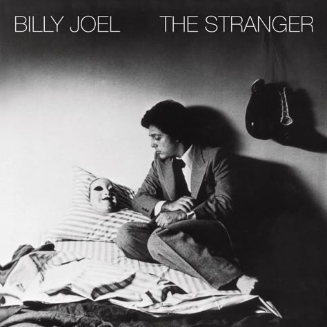

En este espacio te brindaremos recomendaciones músicales muy interesantes
para que puedas conocer nuevos artistas, que tal vez puedan convertirse en tus favoritos.
¡Comencemos!
Laufey
Cantautora islandesa-china que ha ganado popularidad por su estilo único que fusiona el jazz clásico con el pop contemporáneo.
Su música se caracteriza por melodías suaves, letras introspectivas y una voz distintiva.
Género musical:
Jazz pop y pop clásico.
Álbumes:
"Everything I Know About Love" (2022)
"Bewitched" (2023)
Canciones populares:
"From the Start"
"Valentine"
"Falling Behind"
Måneskin
Banda de rock italiana que saltó a la fama tras ganar el Festival de la Canción de Eurovisión 2021.
Su estilo enérgico y su imagen glam rock han capturado la atención de audiencias globales.
Género musical:
Rock y glam rock.
Álbumes:
"Il ballo della vita" (2018)
"Teatro d'ira: Vol. I" (2021)
"Rush!" (2023)
Canciones populares:
"Zitti e buoni"
"Beggin'"
"I Wanna Be Your Slave"
Joji
Cantautor, productor y ex personalidad de YouTube japonés-australiano, cuyo nombre real es George Miller.
Su música se caracteriza por atmósferas melancólicas, letras introspectivas y una mezcla de géneros como el R&B (Rhythm and blues), el trap y el lo-fi.
Género musical:
R&B (Rhythm and blues), trap, lo-fi, música electrónica.
"Glimpse of Us"
"Slow Dancing in the Dark"
"Sanctuary"
Tyler, the Creator
Rapero, productor y diseñador estadounidense conocido por su estilo innovador y su personalidad provocadora.
Su música ha evolucionado desde el rap alternativo hasta sonidos más experimentales y eclécticos.
Género musical:
Rap alternativo, hip-hop & música experimental.
Álbumes:
"Flower Boy" (2017)
"IGOR" (2019)
"Call Me If You Get Lost" (2021)
Canciones populares:
"EARFQUAKE"
"See You Again"
"Yonkers"
Frank Ocean
Cantautor, productor y fotógrafo estadounidense conocido por su estilo musical introspectivo y su enfoque artístico innovador.
Género musical:
R&B (Rhythm and blues), soul, pop experimental.
Álbumes:
"Channel Orange" (2012)
"Blonde" (2016)
Canciones populares:
"Pink + White"
"Ivy"
"Lost"
Billie Eilish
Cantautora estadounidense que saltó a la fama a una edad temprana con su sonido pop atmosférico distintivo.
Es conocida por su estilo vocal único y sus letras oscuras e introspectivas.
Género musical:
Pop, pop alternativo, electropop.
Álbumes:
"When We All Fall Asleep, Where Do We Go?" (2019)
"Happier Than Ever" (2021)
"Hit me hard and soft" (2024)
Canciones populares:
"bad guy"
"Happier Than Ever"
"What Was I Made For?"
Ed Sheeran
Cantautor británico conocido por sus letras sinceras, melodías acústicas y su capacidad para combinar varios géneros musicales.
Es un compositor e intérprete prolífico con un gran número de seguidores a nivel mundial.
Fue una banda de rock británica que alcanzó el éxito internacional a finales de la década de 1970 y principios de la de 1980.
Son conocidos por su mezcla única de rock, reggae y new wave.
Género musical:
Rock, new wave, reggae rock.
Álbumes:
"Outlandos d'Amour" (1978)
"Reggatta de Blanc" (1979)
"Synchronicity" (1983)
Canciones populares:
"Every Breath You Take"
"Roxanne"
"Message in a Bottle"
Billy Joel

Cantautor y pianista estadounidense que ha sido uno de los músicos más populares y respetados de su generación.
Es conocido por sus letras narrativas, melodías memorables y sonido de rock clásico.
Género musical:
Rock, pop, piano rock.
Álbumes:
"Piano Man" (1973)
"The Stranger" (1977)
"52nd Street" (1978)
Canciones populares:
"Piano Man"
"Uptown Girl"
"Scenes From an Italian Restaurant"
Olivia Rodrigo
Cantautora y actriz estadounidense que saltó a la fama a principios de 2021.
Es conocida por sus letras emotivas y su sonido pop-rock.